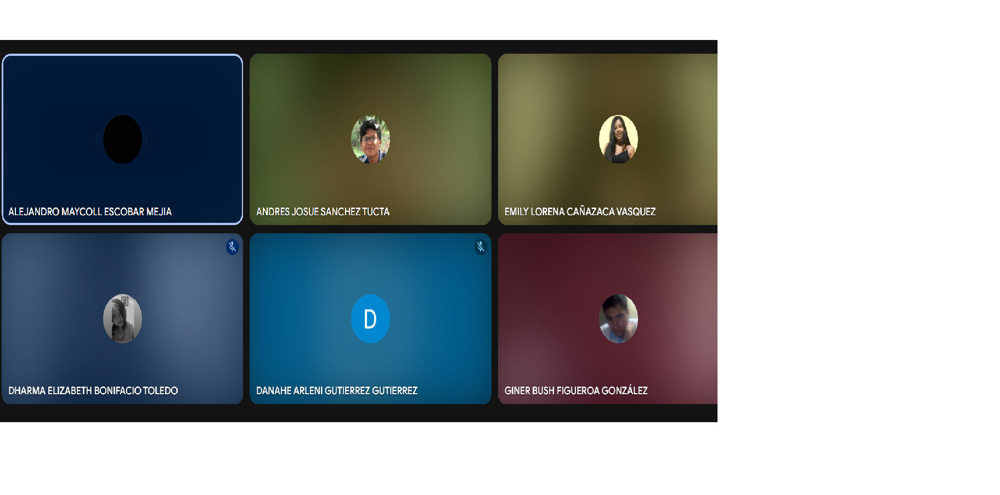

16. Demostrar y Validar el Sprint
Índice de Contenidos
- ENTRADAS
- Equipo Principal de Scrum
- ENTREGABLES DEL SPRINT
- SPRINT BACKLOG
- Criterios de Terminado
- Criterios de Aceptación
- HERRAMIENTAS
- REUNIÓN DE REVISIÓN DEL SPRINT
- SALIDAS
ENTRADAS
La demostración y validación del sprint es el evento donde el equipo Scrum presenta los incrementos de producto completados durante el sprint a los stakeholders y al Product Owner para su evaluación y retroalimentación.
Equipo principal de Scrum
Scrum Master: Sánchez Andrés
Product Owner: Bonifacio Dharma
Equipo de desarrollo:
- Cañazaca Vasquez, Emily Lorena (Frontend)
- Gutiérrez Gutierrez, Danahe Arleni (Backend)
- Figueroa Gonzalez, Giner Bush (Diseño UI/UX)
- Escobar Mejia, Alejandro Maycoll (Full Stack)
ENTREGABLES DEL SPRINT
| Historia de Usuario | Criterios de Aceptación / Entregables |
|---|---|
| Historia 1: Registro de Usuario |
Como usuario, quiero registrarme fácilmente a través de un formulario intuitivo o mi cuenta de Google, para agilizar el proceso de creación de cuenta.
|
| Historia 2: Reserva de Cita |
Como usuario, quiero hacer una reserva de cita a través de un enlace directo al chat de Instagram de la empresa, para confirmar rápidamente con la dueña.
|
| Historia 3: Visor de Citas |
Como dueña, quiero tener un visor de citas para organizar mis servicios de manera eficiente, asimismo podré administrar mis recordatorios.
|
| Historia 4: Registro de Citas y Empleados |
Como dueña, quiero poder registrar la reserva de citas de mis clientes y agregar nuevos empleados a mi sistema, porque necesito gestionar eficientemente las citas y expandir el equipo según la demanda.
|
SPRINT BACKLOG
| Historia | Tarea | Esfuerzo (Horas) | Responsable | Prioridad |
|---|---|---|---|---|
| Historia 1 | Tarea 1.1: Diseñar la interfaz del formulario de registro, incluyendo opciones de registro por correo y Google. | 5 | Emily Lorena | Alta |
| Tarea 1.2: Configurar la base de datos para almacenar la información de los usuarios de manera segura. | 3 | Danahe Arleni | Alta | |
| Tarea 1.3: Implementar la funcionalidad de registro con correo y contraseña, asegurando una experiencia de usuario adecuada. | 5 | Alejandro Maycoll | Media | |
| Tarea 1.4: Configurar la autenticación con Google utilizando OAuth2 para facilitar el registro de los usuarios. | 5 | Alejandro Maycoll | Alta | |
| Historia 2 | Tarea 2.1: Crear el diseño de la sección de reserva con un botón de enlace claro que redirija al chat de Instagram. | 3 | Giner Bush | Media |
| Tarea 2.2: Implementar el enlace al chat de Instagram en la página, verificando que la redirección sea rápida y segura. | 5 | Emily Lorena | Media | |
| Historia 3 | Tarea 3.1: Diseñar e implementar la interfaz del visor de citas, permitiendo la visualización de cada cita. | 8 | Giner Bush | Alta |
| Tarea 3.2: Implementar la funcionalidad de administrar mis recordatorios en tiempo real. | 8 | Danahe Arleni | Alta | |
| Historia 4 | Tarea 4.1: Diseñar la interfaz para el registro de reservas de citas y gestión de empleados. | 5 | Giner Bush | Media |
| Tarea 4.2: Implementar la funcionalidad de registro de citas y empleados en el sistema, permitiendo que los datos se guarden correctamente y sean accesibles. | 8 | Alejandro Maycoll | Alta | |
| Tarea 4.3: Desarrollar la funcionalidad para asignar citas a empleados específicos. | 8 | Danahe Arleni | Alta |
Criterios de Terminado
- Funcionalidad de Login y Registro: Completo y probado para facilitar el acceso seguro y rápido de los usuarios.
- Redirección a Instagram para Reserva de Citas: Enlace accesible y funcional que permite la comunicación directa del usuario con la empresa en Instagram.
- Visor de Citas para el Administrador/Dueña: Herramienta de gestión eficiente de citas.
- Pruebas de Calidad (QA): Superación de todas las pruebas de carga, compatibilidad en dispositivos y navegadores, y optimización visual.
- Aprobación de Stakeholders: Revisión y validación final por parte de los stakeholders, garantizando que todas las expectativas están cumplidas.
Criterios de Aceptación
Historia 1: Registro de Usuario
- El formulario permite registrar por correo y contraseña, además de la opción de vinculación rápida con Google.
- El proceso de registro con Google debe completarse en dos pasos o menos.
- Una vez registrado, el usuario recibe confirmación visible de que el proceso ha sido exitoso y se le redirige a la página de inicio.
Historia 2: Reserva de Cita
- El enlace para reservar cita en Instagram debe estar ubicado de manera destacada en la página de inicio y ser claramente accesible.
- Al hacer clic, el enlace se redirige correctamente al chat de Instagram de la empresa sin interrupciones.
- La dueña puede registrar manualmente las citas en el sistema una vez confirmadas con el cliente en el chat.
Historia 3: Visor de Citas
- El visor de citas debe mostrar claramente los detalles de cada cita.
- El sistema permite al administrador ver las citas en tiempo real.
Historia 4: Registro de Citas y Empleados
- El sistema permite registrar mediante un formulario la cita del usuario.
- Los empleados nuevos van a poder ser registrados de manera exitosa en el sistema por la dueña.
HERRAMIENTAS
Para el desarrollo del sprint se utilizarán las siguientes herramientas:
- Figma - Para diseño de interfaces
- Visual Studio Code - Como IDE principal
- Git/GitHub - Para control de versiones
- Firebase - Para autenticación y base de datos
- Jira - Para gestión de tareas
REUNIÓN DE REVISIÓN DEL SPRINT
La reunión de revisión se llevará a cabo el 24 de mayo de 2025 con los siguientes participantes:
- Equipo Scrum completo
- Stakeholders clave del negocio
- Representantes de áreas relacionadas
Agenda de la reunión
- Presentación de objetivos del sprint (5 min)
- Demostración de cada historia de usuario completada (20 min)
- Recolección de feedback de stakeholders (15 min)
- Discusión de ajustes y próximos pasos (10 min)
SALIDAS
Entregables Aceptados
| Historia de Usuario | Criterios de Aceptación / Entregables | Aceptado | Rechazado |
|---|---|---|---|
| Historia 1: Registro de Usuario | El formulario permite registrar por correo y contraseña, además de la opción de vinculación rápida . | [ ] | [ ] |
| El administrador puede veer los reportes de citas, pacientes,pagos,tratamientos. | [ ] | [ ] | |
| Una vez registrado, el usuario recibe confirmación visible de que el proceso ha sido exitoso y se le redirige a la página de inicio. | [ ] | [ ] | |
| Historia 2: Reserva de Cita | El enlace para reservar cita en Instagram debe estar ubicado de manera destacada en la página de inicio y ser claramente accesible. | [ ] | [ ] |
| Al hacer clic, el enlace se redirige correctamente al chat de Instagram de la empresa sin interrupciones. | [ ] | [ ] | |
| Historia 3: Visor de Citas | El visor de citas debe mostrar claramente los detalles de cada cita. | [ ] | [ ] |
| El sistema permite al administrador ver las citas en tiempo real. | [ ] | [ ] | |
| Historia 4: Registro de Citas y Empleados | El sistema permite registrar mediante un formulario la cita del usuario. | [ ] | [ ] |
| Los empleados nuevos van a poder ser registrados de manera exitosa en el sistema por la dueña. | [ ] | [ ] |